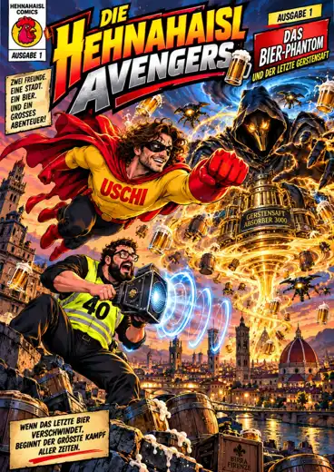

ZWEI FREUNDE. EINE STADT. EIN BIER.
DIE NACHT
GEHÖRT EUCH.
Das Bier-Phantom legt Florenz in Dunkelheit.
Erkunde die Gassen. Zerstöre die Absorber.
Stell dich dem Bösen mitten in seiner Welt.
JOYSTICK / WASD Laufen · MAUS / ← → Umsehen · SHIFT Sprint
KLICK Nahkampf · Q Energiestoß · E Superkraft
BIER +50 % Superkraft · F Absorber ausschalten · LEERTASTE Ausweichen · P Pause
KLICK Nahkampf · Q Energiestoß · E Superkraft
BIER +50 % Superkraft · F Absorber ausschalten · LEERTASTE Ausweichen · P Pause

ORIGINAL-COMIC × EXPLORATIONDAS BIER-PHANTOM